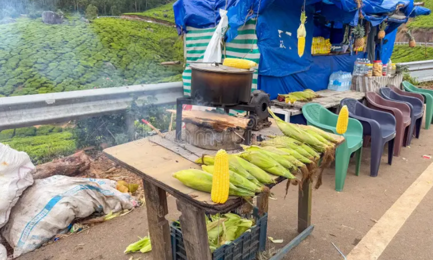
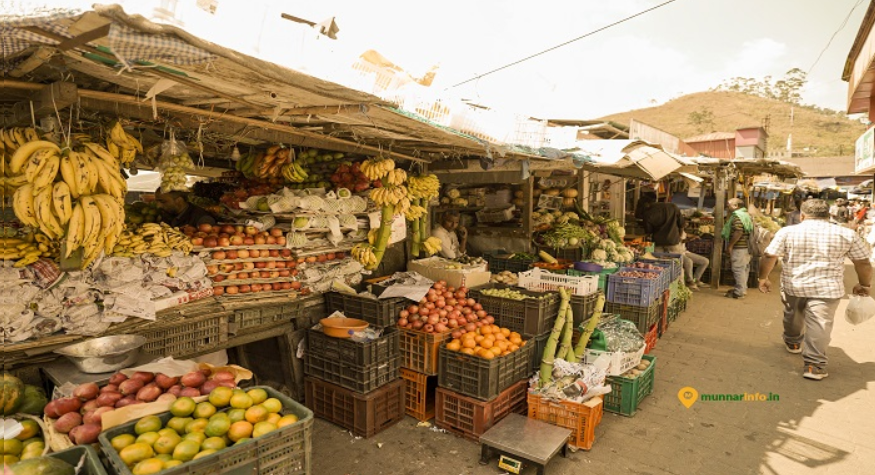
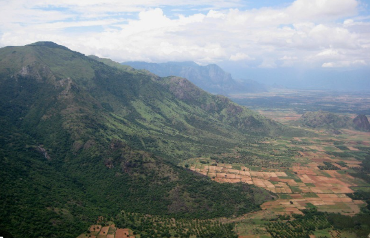

Ramakalmedu is a beautiful hill station in the Idukki district of Kerala, known for its strong winds and scenic landscapes. It is famous for the Kuravan and Kurathi statues, which represent a tribal couple and are a major attraction for visitors. The place offers a wonderful view of green hills and nearby villages, making it a perfect spot for sightseeing.
Ramakalmedu is also well known for its large windmills that generate electricity using the powerful winds in the area. Small vendors near the viewpoint sell snacks, local products, and souvenirs to tourists. The cool climate, wind energy farms, and cultural landmarks make Ramakalmedu a unique and enjoyable destination.



Ramakalmedu is a beautiful hill station in Idukki District, Kerala. It is located at an altitude of about 1,100 metres (3,500 feet) above sea level. The place is famous for its cool climate, strong winds, panoramic views of Kerala and Tamil Nadu, and the giant Kuravan and Kurathi statues.
The name "Ramakalmedu" comes from the words "Rama", "Kal" (rock) and "Medu" (hill). According to local belief, Lord Rama visited this place while searching for Goddess Sita during the Ramayana period.
Ramakalmedu has historical and mythological importance. The area was traditionally inhabited by tribal communities and later became famous for its scenic beauty. Today, it is an important tourist destination and a centre for wind energy generation in Kerala.
Ramakalmedu is one of the windiest places in Kerala. The strong winds make it ideal for generating electricity using windmills. Wind energy projects in this region contribute to clean and renewable power generation.
The hills are covered with grasslands, small forests, medicinal plants and flowering shrubs. The cool climate supports a wide variety of native plants and beautiful landscapes.
Today, Ramakalmedu is one of Kerala's famous tourist destinations. It attracts visitors with its cool climate, scenic beauty, giant statues, trekking opportunities and wind energy projects.